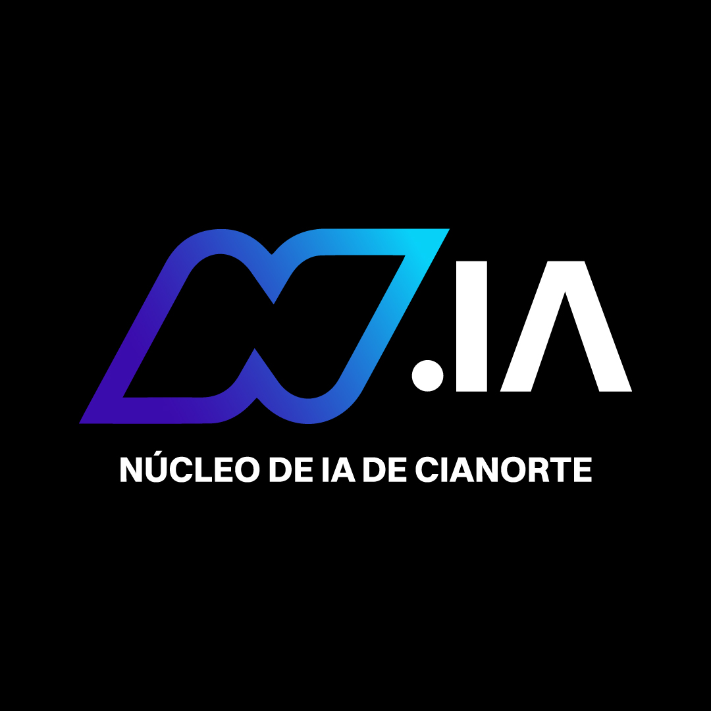
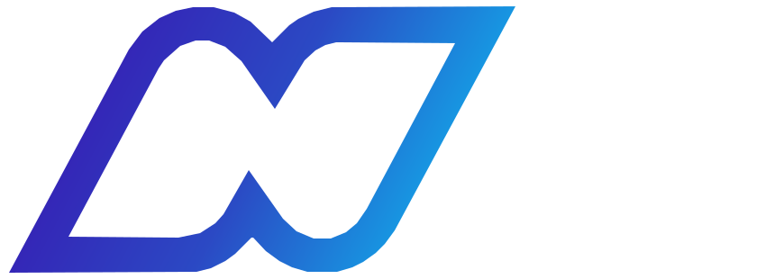
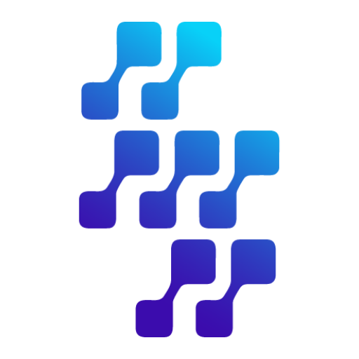

Núcleo de IA · Cianorte, PR
O futuro da IA,
acontecendo em Cianorte.
acontecendo em Cianorte.
28 set – 02 out · 2026 · Gratuito · Certificado 5h


Protótipos para o backdrop pantográfico 3,00 × 2,00 m (proporção 3:2). Design System NIA: preto #050508 + azul profundo #0B0E14 + papel frio #F1F2F7 + gradiente NIA (roxo → azul → ciano). Área segura 20 cm em todas as bordas. Patrocinador em faixa unificada 100% largura na base.
 INSCREVA-SE
INSCREVA-SEUso: palco / abertura. Logo alto e centralizado — corpo dos palestrantes ocupa o terço inferior sem cobrir a marca. Trocar: o placeholder do QR (hoje = símbolo NIA) pelo QR real; logos de patrocinador entram conforme cotas fecharem.
CHECK-INUso: parede para fotos de participantes — a marca aparece em qualquer recorte. Faixa gradiente na base sempre visível acima das cabeças. Trocar: QR real; se virar co-branded com Expoconstrular, o símbolo repetido acomoda 2 marcas por célula.

INSCREVA-SEUso: ambientes claros onde preto chapado apaga (halls, feira, totens). Papel frio (#F1F2F7), nunca creme. Trocar: aqui o wordmark preto oficial entra no lugar do símbolo (logo-branca é só p/ fundo escuro); QR real.
Uso: parede/photo wall com ritmo de tabuleiro — cada quadrado escuro carrega o símbolo NIA sobre preto, os claros ficam em papel. Placa central em gradiente ancora nome + datas. Trocar: QR real; densidade do tabuleiro (9×6) ajustável.
Specs de impressão (todas): 3000 × 2000 mm · 100–150 dpi no tamanho final · CMYK · margem de segurança ≈ 20 cm (linha tracejada) · sangria 2 cm. QR: mínimo 25 × 25 cm impresso, quiet-zone livre, testar leitura a 2 m. Faces: em V1 mantenha a zona central-inferior livre (pessoas em pé). Logos patrocinador: placeholders — versões vetoriais no fechamento.